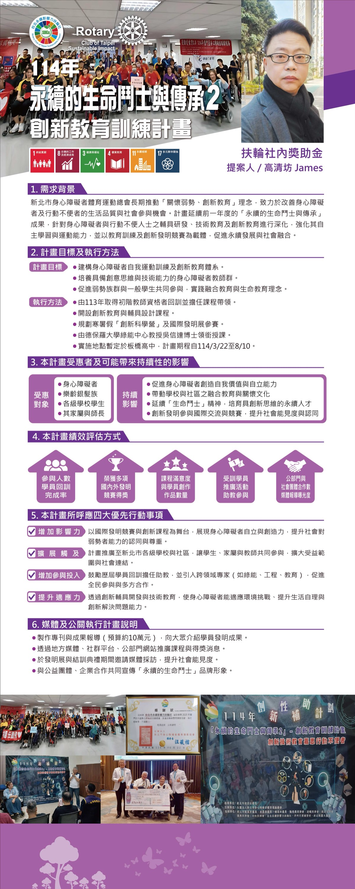

He uses spatial design to respond to elderly care, life education, and innovative education and training.
Read the full profile →
The New Taipei City Adapted Physical Activity and Sports Federation has long promoted the philosophy of "caring for the disadvantaged and innovative education," dedicated to improving the quality of life and opportunities for social participation of people with disabilities and those with limited mobility. Continuing the results of the previous year's "Sustainable Life Warriors and Legacy," this project deepens the research and development of assistive devices, technical education, and innovative education for people with disabilities and limited mobility. It strengthens their capacity for self-directed learning and physical activity, using education, training, and innovation invention competitions as vehicles to promote sustainable development and social inclusion.
Using international invention competitions and innovative courses as a stage, the project showcases the self-reliance and creativity of people with disabilities, raising society's recognition and respect for the abilities of the disadvantaged.
The project extends to schools and communities at all levels in New Taipei City, enabling students, families, and teachers to participate together, broadening the scope of benefit and social connection.
The project encourages past learners to return for refresher training as teaching assistants and brings in cross-disciplinary experts (such as in green energy, engineering, and education), promoting broad participation and multi-party collaboration.
Through the development of innovative assistive devices and technical education, people with disabilities can adapt to environmental challenges, enhancing their daily self-care and innovative problem-solving abilities.